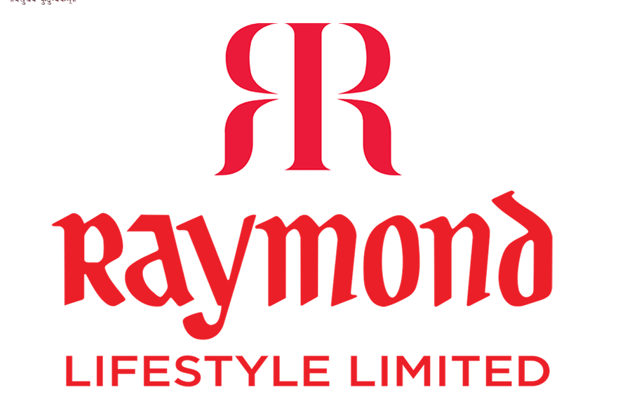

Sagar Singh
MBA Finance | Data Analytics | Financial Modeling | Pune, India
Download CV |About Me

MBA Finance | Symbiosis IMS, Pune (2025-2027)
Aspiring finance professional blending financial planning, risk analysis, and data analytics to drive business decisions. Excelled in financial modeling (Raymond Ltd analysis: ratios, WACC, post-demerger strategy) and data visualization (Maven Analytics: 150K Spotify dataset → interactive Tableau dashboards).
Key Strengths: Critical thinking, SQL/Tableau/Excel, teamwork. Active in SIMS clubs (DataVerse Analytics, Gender Champions). Targeting investment banking, asset management, risk roles.
Featured Projects
Financial Management Analysis - Raymond Lifestyle Ltd
Sep 2025 | Financial Modeling & Strategy Analysis
Analyzed post-demerger financial performance using key ratios, capital structure evaluation, WACC calculation, and working capital efficiency. Reviewed retail expansion strategy impact.
Tools: Excel | Key Insight: Identified efficiency gains opportunities
📄 Download Report {kind=link}
Maven Analytics Music Challenge
Jan 2025 | Data Analysis & Visualization
Cleaned/transformed 150K+ Spotify user entries. Created interactive dashboards showing top artists, songs, listening patterns, and trending albums (Spotify Wrapped-style insights).
Tools: Excel, Tableau | Output: 2 interactive dashboards
Tableau Dashboard-1 Tableau Dashboard-2Skills
- Financial Modeling: Excel/VBA, DCF
- Data Analytics: Python (Pandas, NumPy), SQL, Tableau
- Markets: Fixed Income, Equitiess
- Soft Skills: Critical thinking, Teamwork and Collaboration, Time Management